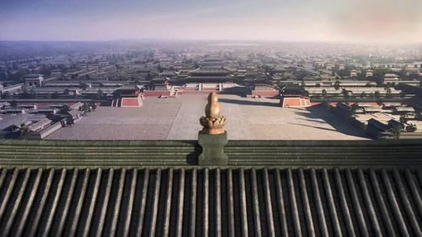
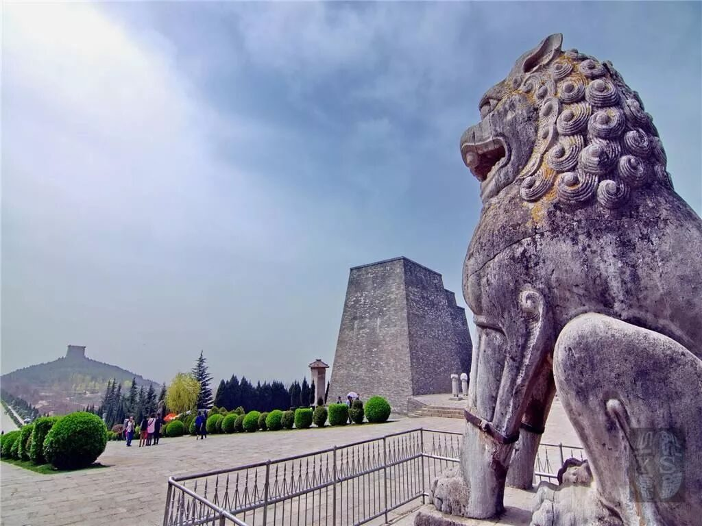
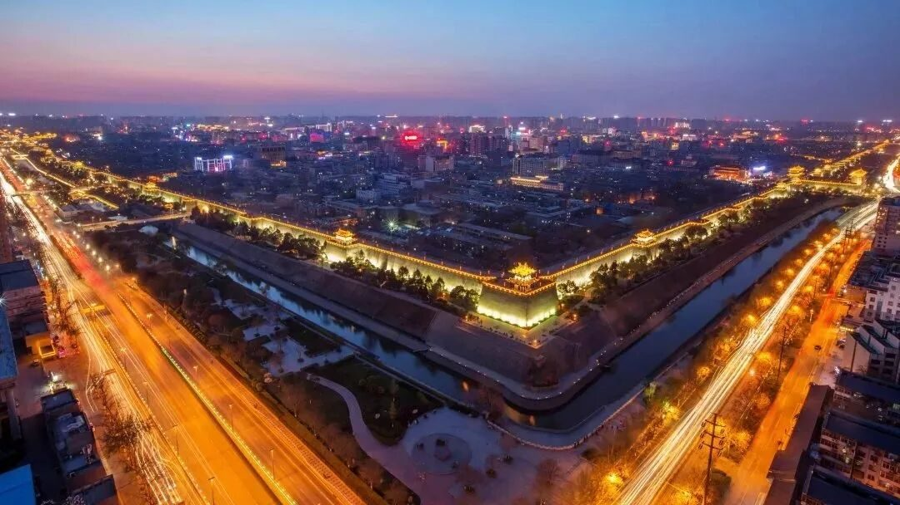

【行者无疆——探寻长安】
“行者无疆 韶忆长安”
地点介绍篇（三）
瞿塘峡口曲江头
万里风烟接素秋
花萼夹城通御气
芙蓉小苑入边愁
珠帘绣柱围黄鹄
锦缆牙樯起白鸥
回首可怜歌舞地
秦中自古帝王州
如果说中国是一棵参天大树，长安无疑是树根。这里，铭刻着华夏文明久远的璀璨荣耀。而如今我就站在你的脚下，心怀崇敬之情来欣赏你的古韵风情，只因为要揭开你蒙在我心中的神秘面纱。

大明宫是唐帝国最宏伟壮丽的宫殿建筑群，也是当时世界上面积最大的宫殿建筑群，其建筑形制影响了当时东亚地区的多个国家宫殿的建设。大明宫也是大唐帝国的国家象征，被誉为千宫之宫、丝绸之路的东方圣殿。
大明宫的平面形制为南宽北窄、四面宫墙闭合的楔形，整座宫殿坐北朝南，居高临下。诗人王维曾题诗——“九天阊阖开宫殿，万国衣冠拜冕旒。”
大明宫从建成之日起，历经二百多年的历史尘埃，最终却毁于战火。这座曾经在这片土地上最宏伟的建筑，虽然已化为历史尘埃，但仍在我们心中占有一席之地。

乾陵是陕西关中地区唐十八陵之一，是中国乃至世界上独一无二的一座两朝帝王、一对夫妻皇帝合葬陵。里面埋葬着唐王朝第三位皇帝高宗李治和中国历史上唯一的女皇帝武则天。乾陵距古城西安76公里，历经23年时间，工程才基本完工。梁山是一座自然形成的石灰岩质的山峰，三峰耸立，北峰最高，南二峰较低，东西对峙。从乾陵东边西望，梁山就像一位女性的躯体仰卧大地，北峰为头，南二峰为胸，人们常说它是女皇武则天的绝妙象征，此等美人形态，实属大自然的瑰美之处。

大唐芙蓉园位于西安市城南的曲江开发区，占地面积一千亩，总投资13亿元。唐玄宗时期对芙蓉园进行了大规模扩建，园内宫殿连绵，楼亭起伏，园林建筑水平达到最高境界，各类文化活动也趋于高潮。但随着唐末长安城的毁灭，芙蓉园也被破坏殆尽。而大唐芙蓉园就是在原唐代芙蓉园遗址以北，仿照唐代皇家园林式样重新建造的，是中国第一个全方位展示盛唐风貌的大型皇家园林式文化主题公园。它分别从十四个景观文化区展示了唐王朝辉耀四方的精神风貌以及它横贯中天的雄浑大气。
西安明城墙位于陕西省西安市中心区，轮廓呈封闭的长方形是中国现存规模最大、保存最完整的古代城垣。现存城墙始建于明太祖洪武三年，是在明太祖“高筑墙、广积粮、缓称王”的政策指导下，在隋、唐皇城旧城遗址上扩建起来的。西安明城墙当时是西安的府城，因此这座城池规模宏大坚固，再加上后来明清屡次修葺、增建，至今依然保存完好。西安明城墙显示了我国古代劳动人民的聪明才智，也为我们研究明代的历史、军事和建筑等提供了不可多得的实物资料。
城墙下，这个古老的城市为我们讲述着古老的传说，摸一摸那厚重的城墙，有多少的故事在那里沉淀。钟鼓楼的霓虹绚丽多彩，人潮涌动，蓦然回首，仿佛时空将我们带回了那繁花似锦的大唐盛世。


图片丨行者无疆实践团
文字丨郭新明
责编丨邓子孚
审核丨邓子孚 潘雯雯
行者无疆实践团
QQ：2758025831

随行者一起认识世界
长按二维码关注